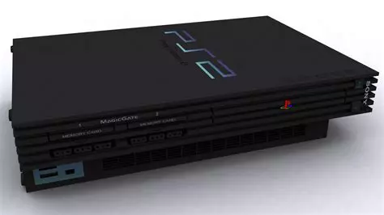

La PlayStation 1, souvent abrégée en PS1, est la première console de jeu vidéo de la série PlayStation de Sony Interactive Entertainment. Elle a été lancée le 3 décembre 1994 au Japon, puis déployée dans d'autres régions au cours des années suivantes. La PlayStation 1 a été l'une des premières consoles à populariser les graphismes 3D dans les jeux vidéo, ouvrant la voie à une nouvelle ère de conception de jeux. Elle a utilisé des CD-ROM comme support de stockage, permettant aux jeux de contenir des mondes plus vastes et des cinématiques plus riches que les cartouches utilisées par les consoles précédentes. La console a accueilli une impressionnante bibliothèque de jeux qui ont marqué l'histoire du jeu vidéo. Des titres emblématiques tels que "Final Fantasy VII", "Metal Gear Solid", "Gran Turismo", "Resident Evil", et "Crash Bandicoot" sont devenus des classiques et ont contribué à établir la réputation de la PlayStation en tant que plateforme de jeu de premier plan. La manette d'origine de la PlayStation 1, connue sous le nom de manette PlayStation ou DualShock, a introduit le concept de vibration tactile (fonctionnalité DualShock) qui a ajouté une dimension immersive aux jeux. En plus de jouer à des jeux, la PlayStation 1 pouvait également lire des CD audio, en faisant une solution de divertissement multimédia polyvalente pour de nombreux foyers. La PlayStation 1 a connu plusieurs versions au fil des ans, notamment la PSOne, une version plus petite et redessinée de la console d'origine, offrant une plus grande portabilité et une esthétique améliorée. La PlayStation 1 a marqué le début d'une franchise qui allait devenir l'une des marques les plus influentes et les plus importantes de l'industrie du jeu vidéo. Elle a ouvert la voie à des décennies de succès pour Sony dans le domaine des consoles de jeux.
La PlayStation 2 (PS2) est la deuxième console de jeu vidéo de la série PlayStation de Sony Interactive Entertainment. Lancée en mars 2000 au Japon et en octobre 2000 dans le reste du monde, la PS2 a été un énorme succès commercial et est devenue la console de salon la plus vendue de tous les temps. La PS2 était une console très avancée pour son époque, offrant des capacités graphiques améliorées par rapport à sa prédécesseure, la PlayStation 1. Elle utilisait un processeur Emotion Engine de Sony ainsi qu'un lecteur DVD, ce qui en faisait à la fois une console de jeu et un lecteur multimédia. Elle a bénéficié d'une vaste bibliothèque de jeux comprenant des titres emblématiques dans une grande variété de genres. Des jeux comme "Grand Theft Auto: San Andreas", "Gran Turismo 3: A-Spec", "Final Fantasy X", "Metal Gear Solid 2: Sons of Liberty" et "Shadow of the Colossus" ont marqué cette génération de joueurs. En plus de jouer à des jeux, la PS2 pouvait lire des DVD, ce qui en a fait un élément central des salons de nombreuses familles, offrant à la fois des options de divertissement interactif et passif. La manette DualShock 2, une évolution de la manette DualShock de la PlayStation 1, est devenue emblématique avec ses fonctionnalités améliorées et son design ergonomique. La PS2 a bénéficié d'une longévité exceptionnelle sur le marché, avec une production officielle qui a duré jusqu'en 2013. Elle était également compatible avec la vaste majorité des jeux de la PlayStation 1, ce qui a permis aux joueurs de profiter d'une grande rétrocompatibilité. La PlayStation 2 a marqué une étape importante dans l'histoire des consoles de jeux vidéo, contribuant à établir Sony comme un leader de l'industrie et à consolider la franchise PlayStation comme l'une des plus influentes de tous les temps.
La PlayStation 3 (PS3) est la troisième console de jeu vidéo de la série PlayStation développée par Sony Interactive Entertainment. Elle a été lancée en novembre 2006 dans diverses régions du monde, marquant une nouvelle étape dans l'évolution des consoles de jeux vidéo. La PS3 a été conçue avec une architecture de pointe, intégrant un processeur Cell Broadband Engine développé par Sony, IBM et Toshiba. Ce processeur multicœur offrait des performances de calcul remarquables, permettant des expériences de jeu plus immersives et des graphismes de haute qualité. Elle était également la première console grand public à inclure un lecteur Blu-ray, offrant aux utilisateurs la possibilité de jouer à des jeux sur Blu-ray ainsi que de regarder des films haute définition. Cette fonctionnalité a contribué à populariser le format Blu-ray et a ajouté une valeur significative à la console en tant que centre multimédia tout-en-un. La PS3 a introduit le PlayStation Network (PSN), un service en ligne permettant aux joueurs de télécharger des jeux, des démos, des extensions de jeux et d'interagir avec d'autres joueurs à travers le monde. Le PSN a également introduit des fonctionnalités telles que le jeu en ligne, les trophées et les chats vocaux. Sa manette sans fil, la DualShock 3, a maintenu le design emblématique de ses prédécesseurs tout en ajoutant une fonctionnalité de retour de force, permettant aux joueurs de ressentir des vibrations correspondant à l'action à l'écran. La PS3 a accueilli une vaste gamme de jeux exclusifs et multiplateformes, dont des franchises célèbres telles que "Uncharted", "The Last of Us", "Metal Gear Solid 4: Guns of the Patriots" et "Gran Turismo 5". Au fil du temps, Sony a introduit différentes versions de la PS3, notamment des modèles Slim et Super Slim, offrant des améliorations de conception et des capacités de stockage accrues. La PlayStation 3 a représenté un saut significatif dans les capacités technologiques des consoles de jeu, offrant une expérience de divertissement multimédia avancée et une bibliothèque de jeux variée. Elle a continué à jouer un rôle important dans l'industrie du jeu vidéo tout au long de sa durée de vie.
La PlayStation Vita (PS Vita) est une console de jeux portable développée par Sony Interactive Entertainment, sortie en décembre 2011 au Japon et en février 2012 dans le reste du monde. Conçue pour offrir une expérience de jeu haut de gamme dans un format portable, la PS Vita était équipée d'un écran tactile OLED (plus tard remplacé par un écran LCD sur certains modèles) offrant une résolution nette et des couleurs vives. Elle proposait une gamme de contrôles innovants, comprenant un écran tactile frontal, un pavé tactile arrière, des sticks analogiques, des boutons et des déclencheurs traditionnels. Cette combinaison de contrôles offrait aux développeurs de jeux une grande variété de possibilités pour concevoir des expériences de jeu uniques et immersives. Dotée de fonctionnalités de connectivité telles que le Wi-Fi et le Bluetooth, la PS Vita permettait aux joueurs de se connecter en ligne pour jouer avec des amis, télécharger des jeux depuis le PlayStation Store et accéder à une variété de services en ligne. Sa bibliothèque de jeux comprenait des titres originaux, des portages de jeux populaires et des jeux indépendants. Des jeux comme "Persona 4 Golden", "Gravity Rush", "Uncharted: Golden Abyss" et "Killzone: Mercenary" ont été salués par les critiques et les joueurs. En plus de jouer à des jeux, la PS Vita permettait aux utilisateurs de profiter d'applications multimédias telles que des lecteurs vidéo, de la musique et des applications de réseaux sociaux, ajoutant ainsi à sa polyvalence en tant que dispositif de divertissement portable. Bien que la PS Vita n'ait pas atteint le même niveau de popularité que les consoles de salon de la famille PlayStation, elle reste appréciée pour ses performances solides, ses fonctionnalités innovantes et sa bibliothèque de jeux diversifiée, en faisant une option attrayante pour les joueurs en déplacement.
La PlayStation 4 (PS4), lancée par Sony Interactive Entertainment en novembre 2013, représente une avancée majeure dans le monde du jeu vidéo. Propulsée par un processeur octa-core AMD Jaguar et un GPU AMD Radeon, la PS4 offre des performances graphiques et de traitement de pointe. Avec 8 Go de mémoire système GDDR5 et un disque dur intégré pour le stockage des jeux et des données, elle assure une expérience de jeu fluide et immersive. La manette sans fil DualShock 4, qui accompagne la PS4, propose un pavé tactile, des haut-parleurs intégrés, un port USB et des capteurs de mouvement. Cette manette offre une interaction intuitive et enrichissante avec les jeux, notamment grâce à des fonctionnalités comme la détection de mouvement et la reconnaissance faciale. Grâce à sa connectivité Ethernet ou Wi-Fi, la PS4 permet aux joueurs de profiter du jeu en ligne, de télécharger des jeux et des mises à jour, ainsi que d'accéder à une variété de services de streaming. Les ports USB de la console permettent de connecter des périphériques supplémentaires tels que des disques durs externes, des claviers et des souris. Outre le jeu, la PS4 offre une multitude de fonctionnalités multimédias, y compris la lecture de films et de musique, ainsi que la diffusion en continu via des applications comme Netflix, YouTube et Spotify. Les joueurs peuvent également enregistrer et partager des séquences de jeu, et même diffuser en direct leurs sessions de jeu sur des plateformes comme Twitch et YouTube. La PS4 est également compatible avec PlayStation VR, le système de réalité virtuelle de Sony, offrant ainsi une expérience de jeu encore plus immersive et innovante. Avec sa vaste bibliothèque de jeux exclusifs et tiers, la PlayStation 4 continue de captiver les joueurs du monde entier, établissant ainsi sa position en tant que l'une des consoles de jeu les plus populaires et les plus appréciées de sa génération.
La PlayStation 5 (PS5), dernier-né de Sony Interactive Entertainment, a été lancée en novembre 2020, marquant une évolution majeure dans le monde du jeu vidéo. Propulsée par un processeur AMD Ryzen Zen 2 octa-core et un GPU AMD Radeon RDNA 2, la PS5 offre des performances graphiques et de traitement inégalées. Avec ses 16 Go de mémoire système GDDR6, elle promet des temps de chargement ultra-rapides et la création d'univers de jeu immersifs et détaillés. Ce qui distingue la PS5, ce sont ses technologies innovantes. Le ray tracing en temps réel, le retour haptique avancé et les déclencheurs adaptatifs de la manette DualSense plongent les joueurs dans une expérience de jeu totalement immersive. De plus, son SSD personnalisé réduit considérablement les temps de chargement, offrant une réactivité accrue et des fonctionnalités telles que le transfert instantané entre les jeux. La PS5 est également rétrocompatible avec la plupart des jeux PS4, garantissant une transition en douceur pour les utilisateurs existants. Avec une connectivité Wi-Fi et Ethernet, elle permet le jeu en ligne, le téléchargement de jeux et l'accès aux services de streaming. Enfin, elle offre une gamme complète de fonctionnalités multimédias, de la lecture de films et de musique à la diffusion en continu via des applications populaires. La PlayStation 5 incarne l'avenir du divertissement interactif, offrant des performances de pointe, des fonctionnalités innovantes et une expérience de jeu immersive. Elle promet de continuer à captiver les joueurs du monde entier avec une bibliothèque de jeux en constante expansion et des expériences de jeu uniques.